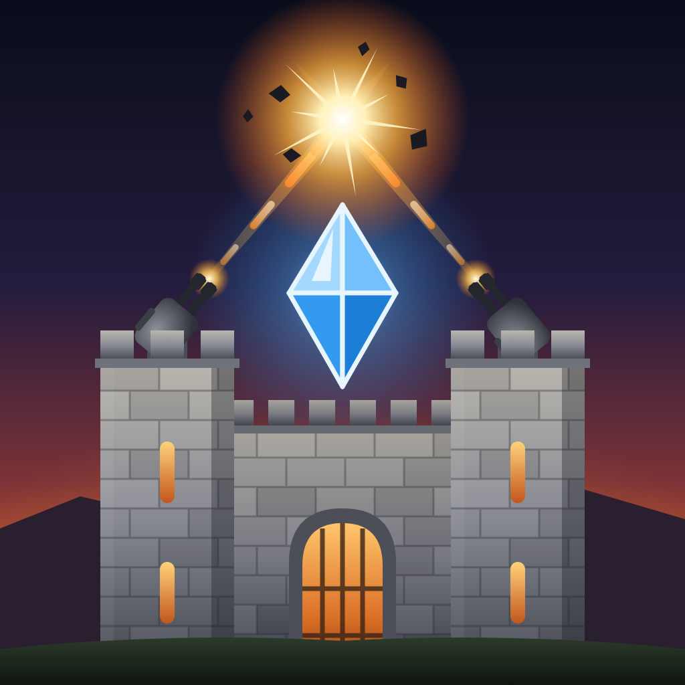
Crossfire Keep
Tower Defense Meets FPS · iPhone and iPad
Build turrets along the roads, then pick up a gun and fight beside them. Crossfire Keep is tower defense where you're on the battlefield: plan your defenses between waves, then hold the line in first person with iron sights, recoil, reloads and headshots. When a giant walks up the road, you aim for its head.
Crossfire Keep is the first game by Evans Lin, an independent developer working alone: the tower defense game Evans wanted to play, where you fight beside your turrets. The billboards in its levels advertise the family's new bakery, Two Mice Three Cats in San Ramon, California, a small business just starting out too.
Fact sheet
- Developer
- Evans Lin (solo, independent)
- Platforms
- iPhone and iPad (iOS 16 or later)
- Genre
- Tower defense and first-person shooter
- Campaigns
- Easy, Normal (Siege) and Hard (Bastion): 90 levels in 18 worlds
- Arsenal
- 24 turrets, 12 traps, 12 guns
- Price
- Free, with in-app purchases. Every gun, turret, trap and gun part unlocks by playing; finishes are purely cosmetic.
- Contact
- lin.evanslin@icloud.com
App previews
As you play it
Real play on iPhone, the HUD and touch controls as players see them. Stills from the app previews, 1920×886.

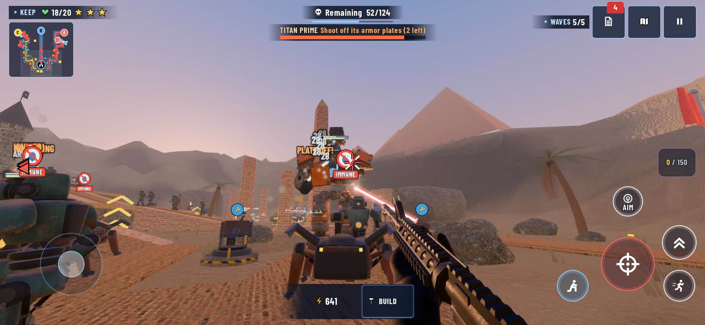

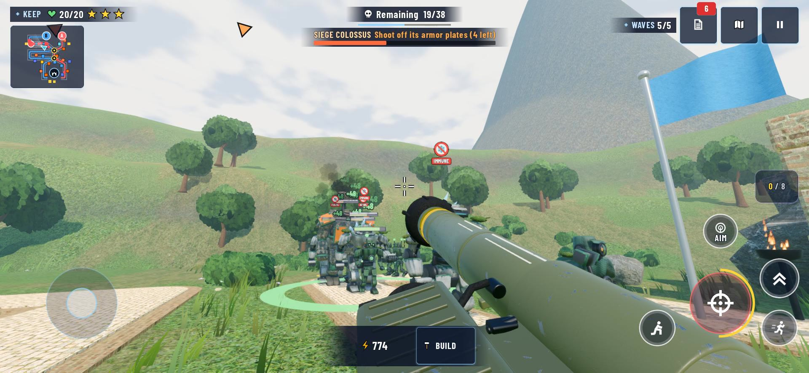

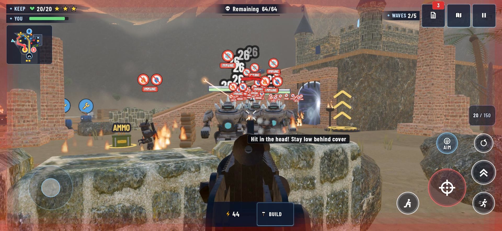

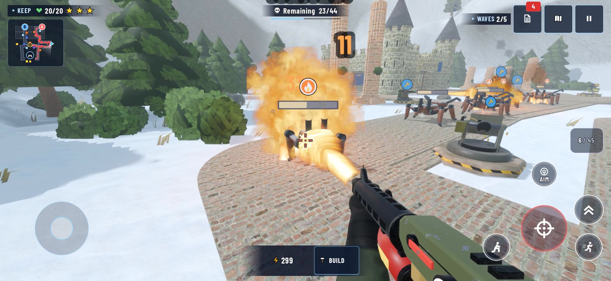
Screenshots
Real play too: each a real wave of its level, against a defense a player could have built by then. Tap one for the full size.
iPhone 2868×1320

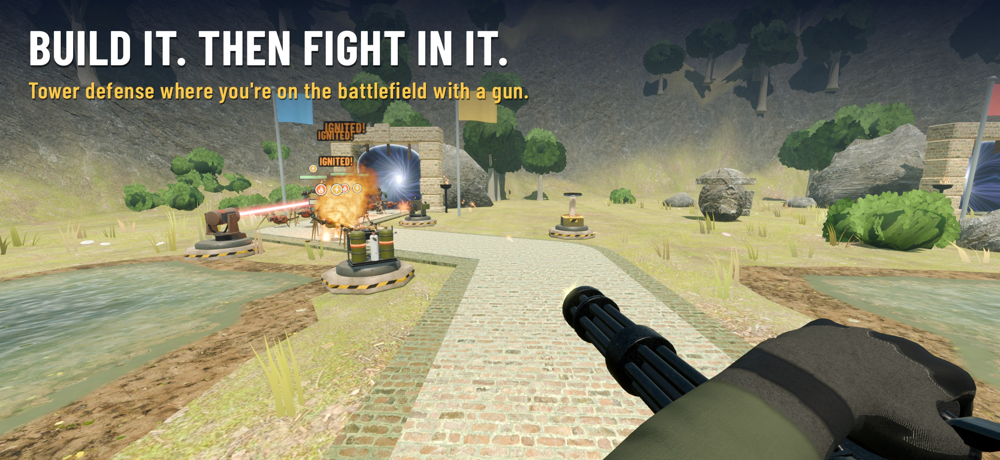

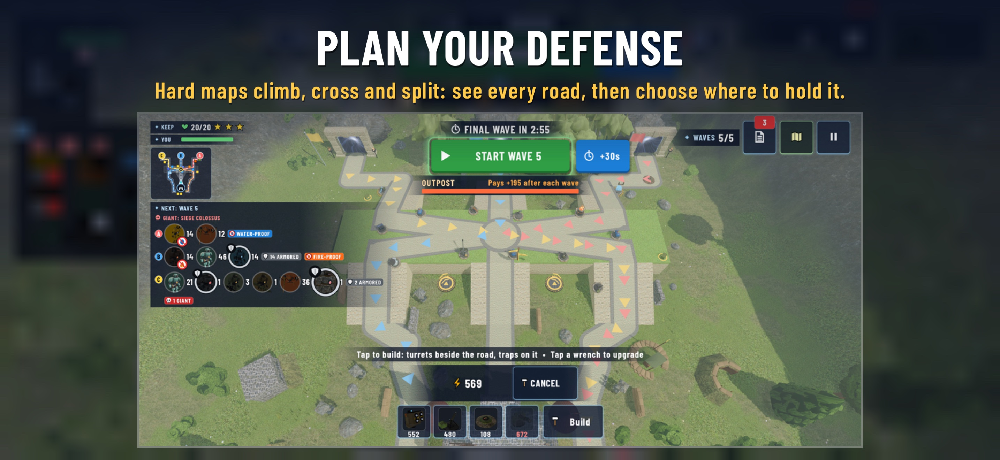

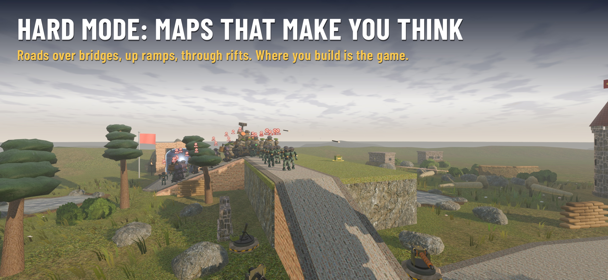

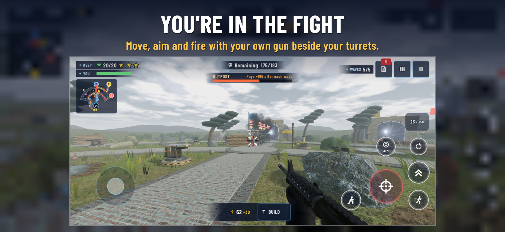

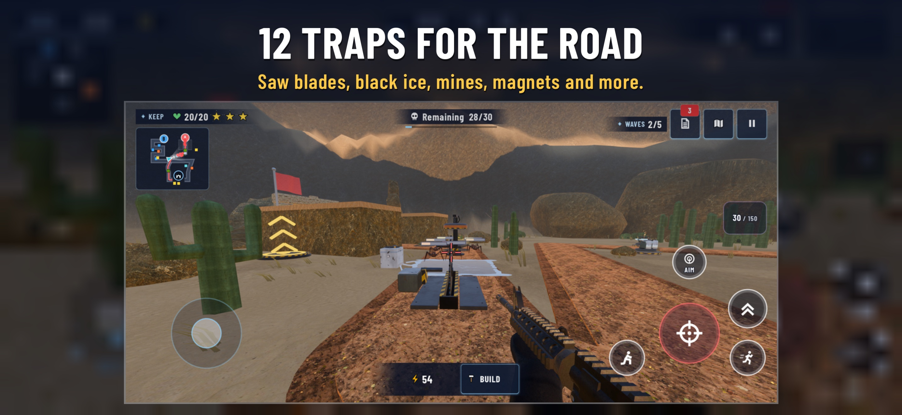

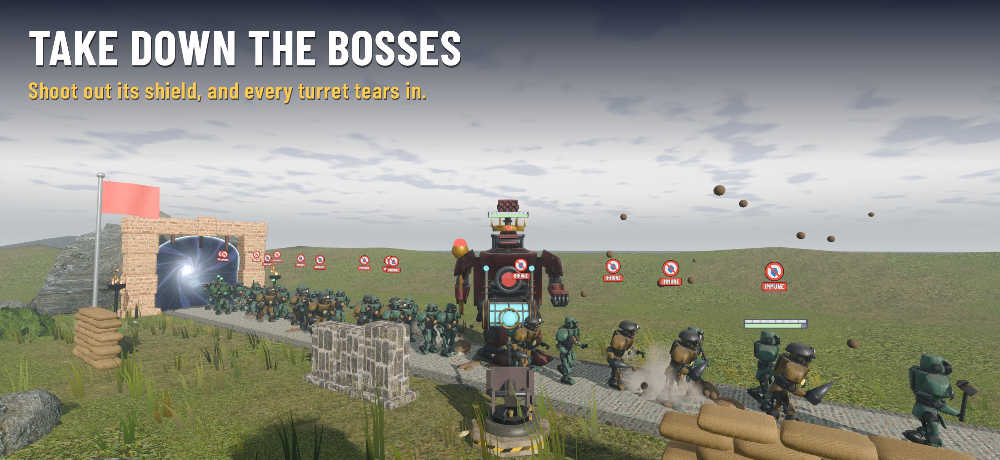

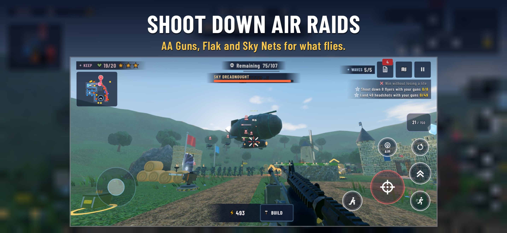

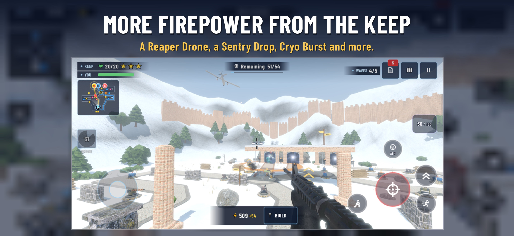

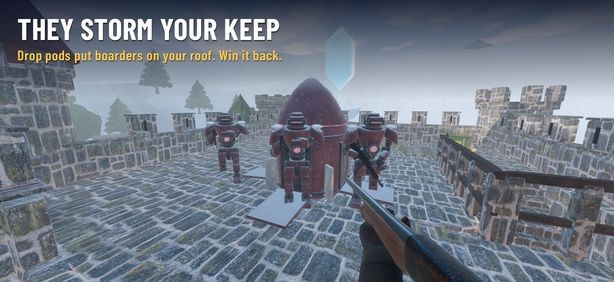

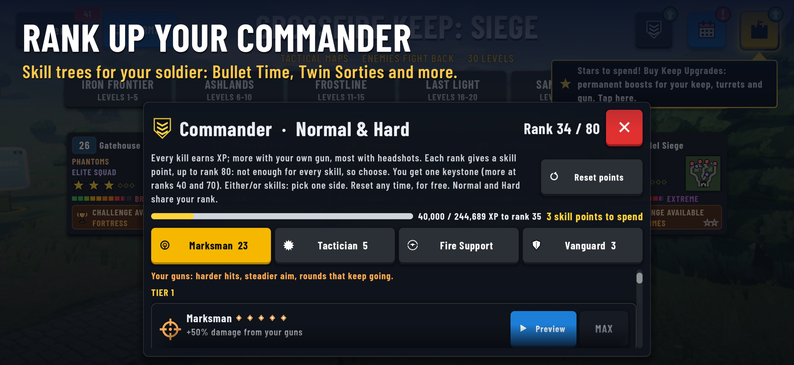
© 2026 Evans Lin. Support · Privacy policy